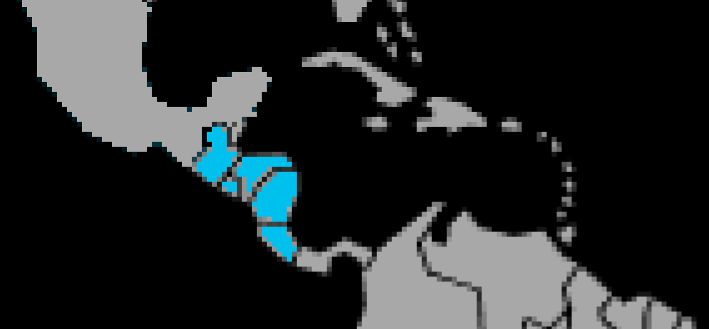

Systématique
- Ordre : Cichliformes
- Famille : Cichlidae
- Genre : Amatitlania
- Espèce : Amatitlania nigrofasciata
Amatitlania nigrofasciata est un cichlidé d’Amérique centrale de taille modeste, connu pour ses bandes verticales sombres et sa grande robustesse en aquarium. [web:78][web:87]
Les adultes mesurent en général 10 à 12 cm pour les mâles, un peu moins pour les femelles, et s’adaptent facilement à des aquariums de taille moyenne. [web:78][web:81]
L’espèce est territoriale et assez agressive, surtout en période de reproduction, où elle défend vigoureusement son site de ponte et ses jeunes. [web:78][web:81]
La cohabitation doit se faire avec des poissons robustes et de taille comparable, dans un bac offrant de nombreuses cachettes (rochers, racines, pots, cavités) pour diviser les territoires. [web:78][web:87]
Mode : pondeur sur substrat découvert ou en cavité; le couple nettoie une pierre, une racine ou l’intérieur d’une cachette où la femelle dépose les œufs. [web:78][web:81]
Les deux parents assurent une garde rapprochée des œufs, des larves puis des alevins en nuage; la reproduction est considérée comme facile et fréquente en aquarium. [web:78][web:87]
Dimorphisme sexuel : les mâles sont plus grands, avec des nageoires plus allongées, et peuvent développer une légère bosse frontale, tandis que les femelles montrent souvent une zone ventrale plus colorée. [web:78][web:87]
Espérance de vie : en captivité, Amatitlania nigrofasciata vit généralement 8 à 10 ans si les conditions de maintenance sont bonnes. [web:78][web:81]
L’espèce occupe une grande variété de milieux en Amérique centrale, des petits ruisseaux aux zones peu profondes de rivières plus importantes, avec substrats rocheux, branches et racines offrant de nombreux abris. [web:78][web:81]
Répartition
Origine naturelle :
- Amérique centrale (Guatemala, Honduras, El Salvador, Nicaragua, Costa Rica).
- Rivières et ruisseaux se jetant dans l’Atlantique ou la mer des Caraïbes.
L’espèce est très adaptable et peut être trouvée dans des eaux lentes comme dans des secteurs plus rapides, pourvu qu’il y ait des abris rocheux et racinaires. [web:78][web:81]
Paramètres de maintenance
Température : 22 à 28 °C.
pH : 6,5 à 7,8, de légèrement acide à légèrement alcalin.
GH : 5 à 20 °dGH, espèce tolérante à une large gamme de dureté.
Courant : faible à modéré, avec une bonne filtration et des changements d’eau réguliers pour limiter les nitrates. [web:78][web:81]
Volume conseillé : au minimum 150 à 200 L pour un couple, davantage en communautaire avec d’autres cichlidés. [web:78][web:81]
Régime alimentaire
Régime : omnivore à tendance carnivore; il consomme insectes, petits invertébrés, algues et débris organiques. [web:78][web:87]
En aquarium, il accepte facilement granulés, paillettes, légumes pochés et nourritures congelées variées. [web:78][web:81]
Une alimentation diversifiée, distribuée en petites rations régulières, permet de maintenir une bonne santé et de limiter la pollution de l’eau. [web:78]